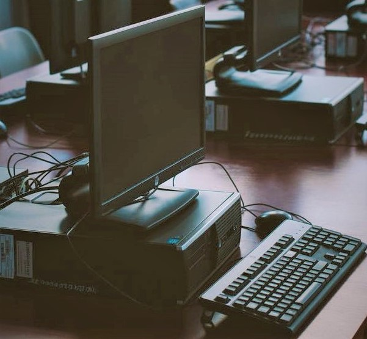

Computer Science is learning about computers and their uses. The word
computer has become a very common word and its use is extensive.
A computer is simply a machine that can solve problems by accepting data
(input).Performing certain operations on that data (process) and presenting
the results of those operations (output). About the authors:
Exploring Computer Science – a text book of Computer Science for classes IX
and X has been co-authored by Naseem Kapadia and Mohammad Khalid Shah.

1.1 History of Computers
How did computes come into existence? The history of Computer is quite interesting.
Imagine that you have a job where you have to perform nothing but calculations
every day—at one point of time you will get bored. You might even become careless
and start making mistakes. This is the reason inventors come up with something that
would automate the task of performing calculations.
The chines abacus was one of the early inventions that helped humans perform mathematical
calculations. After the invention of a multitude Of diverse devices such as the Jacquard loom
(1805) and Charles Babbage’s “analytical engine” (1834), calculating machines involved into
the modern computers that we see today. In the initial days, when electronic computer devices
first come into use, there was much difference of opinion on the relative merits of analog
computers over digital computers. In fact, even by the end of the 1960s, only analog putters
over digital computers were used for solving systems having finite difference equations.
As more time passed users realized that digital computing device had the economics,
power and scalability which were needed for dealing with large-scale computations.
Starting from simple hand had calculators to supercomputers, today’s world Is dominated
by digital computers.
Generations of Computers
Computers, at various stages of their evolution, have been divided into six generations.
Every new generations has certain dramatic improvements when compared to its previous
generations. These improvements were the result of the technology used for building the
computers, programming languages used and the computers systems internal organizations.
The six generations of computers are:
>> The Mechanical Era (1623-1900)
>> First-Generation Electronic Computers (1937-1953)
>> Second-Generation (1954-1962)
>> Third-Generation (1963-1972)
>> Fourth-Generation (1972-1984)
>> Fifth-Generation (1984-1990)
>> Sixth-Generation (1990-till date)
Card title
With supporting text below as a natural lead-in to additional content.